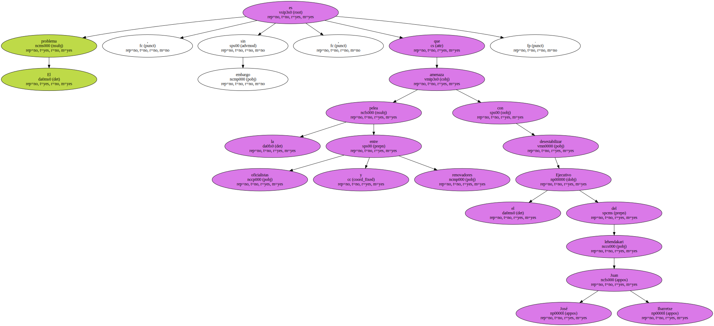
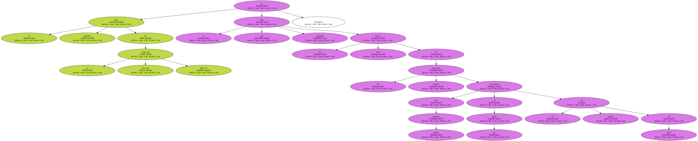
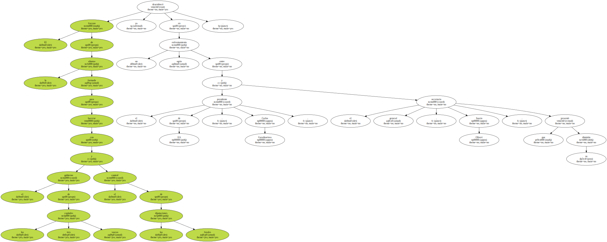
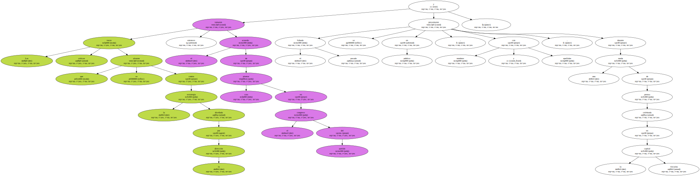
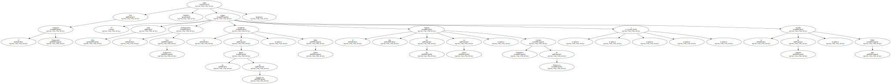
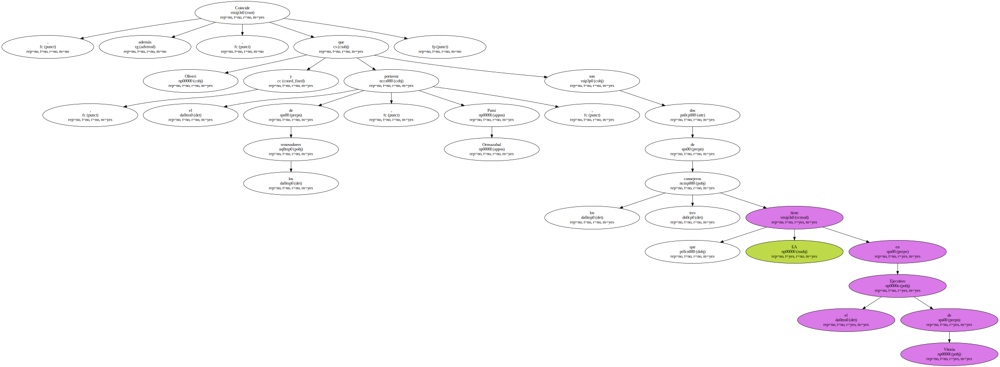
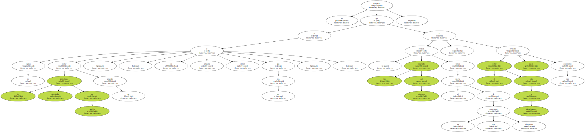
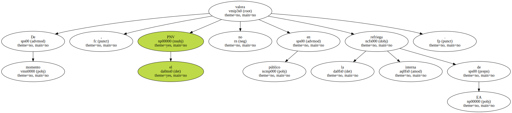
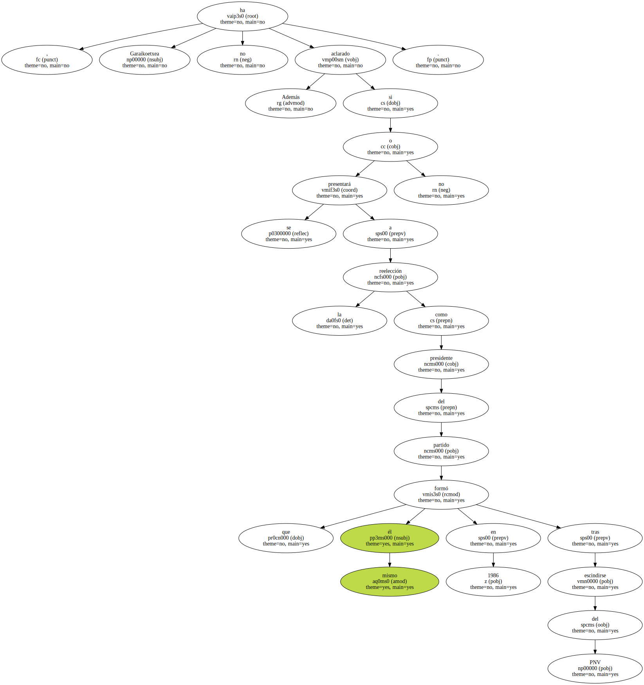

Al presidente de Eusko Arkatasuna ( EA ) , Carlos Garaikoetxea , le ha salido un sector crítico encabezado por el consejero de Vivienda del Gobierno vasco , Patxi Ormazabal , que ha puesto la vista en el próximo congreso del partido que tendrá lugar este mes en Pamplona ( Navarra ).

El problema , sin embargo , es que la pelea entre oficialistas y renovadores amenaza con desestabilizar el Ejecutivo del lehendakari Juan José Ibarretxe.
El socio pequeño de la coalición electoral PNV-EA es el que está pagando los platos rotos de los magros resultados cosechados por ambos partidos en las urnas el pasado 13 de junio.
El fracaso de la alianza formada para hacerse con el gobierno de las tres capitales vascas y el control de las diputaciones forales ya desembocó en un agrio enfrentamiento entre el presidente de EA , Carlos Garaikoetxea , y el secretario general , Inazio Oliveri , que presentó su dimisión.
Las voces críticas que se alzaron contra la estrategia diseñada por la dirección tomaron entonces el acuerdo de plantar cara en el congreso del partido y el pasado Sábado se presentaron en público , con nombres y apellidos , durante una rueda de prensa celebrada en la capital vizcaína.
Con el consejero Ormazabal también están 12 cargos , entre ellos , el parlamentario Yon Goikoetxea ; el presidente de las Juntas de Guipúzcoa , Iñaki Alkiza ; el número dos de EA en Alava , Avelino Fernández de Quincoces , y el alcalde de Amurrio , Pablo Isasi.
Coincide , además , que Oliveri , y el portavoz de los renovadores , Patxi Ormazabal , son dos de los tres consejeros que EA tiene en el Ejecutivo de Vitoria.
Se sospecha que si las enfrentadas posiciones de partida no logran sellar un acuerdo - - y se anuncia difícil que así sea - - , los resultados del cónclave podrían forzar el relevo de los dos consejeros disidentes si es el sector afín a Garaikoetxea quien revalida sus posiciones.
De momento , el PNV no valora en público la refriega interna de EA.
Además , Garaikoetxea no ha aclarado si se presentará o no a la reelección como presidente del partido que él mismo formó en 1986 tras escindirse del PNV.
